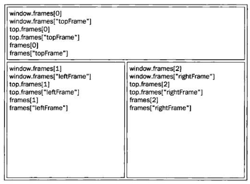

BOM 的核心对象是 window，它表示浏览器的一个实例。在浏览器中，window 对象有双重角色，它既是通过 JavaScript 访问浏览器窗口的一个接口，又是 ECMAScript 规定的 Global 对象。
所有在全局作用域中声明的变量、函数都会变成 window 对象的属性和方法。
定义全局变量与在 window 对象上直接定义属性的差别：全局变量不能通过 delete 操作符删除，而直接在 window 对象上的定义的属性可以。
使用 var 语句添加的 window 属性有一个名为 [[Configurable]] 的特性 ，这个特性的值被设置为 false，因此这样定义的属性不可以通过 delete 操作符删除。
尝试访问未声明的变量会抛出错误，但是通过查询 window 对象，可以知道某个可能未声明的变量是否存在。
//这里会抛出错误，因为 oldValue 未定义
var newValue = oldValue;
//这里不会抛出错误，因为这是一次属性查询
var newValue = window.oldValue; //undefine;
如果页面中包含框架，则每个框架都拥有自己的 window 对象，并且保存在 frames 集合中。在 frames 集合中，可以通过数值索引（从0开始，从左至右，从上到下）或者框架名称来访问相应的 window 对象。每个 window 对象都有一个 name 属性，其中包含框架的名称。
<frameset rows="160, *">
<frame src="frame.html" name="topFrame" />
<frameset cols="50%, 50%">
<frame src="anotherframe.html" name="leftFrame" />
<frame src="yetanotherframe.html" name="rightFrame" />
</frameset>
</frameset>
这里，可以通过 window.frames[0] 或者 window.frames["topFrame"] 来引用上方的框架，不过最好使用 top 而非 window 来引用这些框架。
top 对象始终指向最高（最外）层的框架，也就是浏览器窗口。使用它可以确保在一个框架中正确地访问另一个框架。因为对于在一个框架中编写的任何代码来说，其中的 window 对象指向的都是那个框架的特定实例，而非最高层的框架。
与 top 相对的另一个 window 对象是 parent。该对象始终指向当前框架的直接上层框架。在某些情况下，parent 有可能等于 top；但在没有框架的情况下，parent 一定等于 top（此时它们都等于 window）。
除非最高层窗口是通过 window.open() 打开的，否则其 window 对象的 name 属性不会包含任何值。
与框架有关的最后一个对象是 self，它始终指向 window；实际上，self 和 window 对象可以互换使用。引入 self 对象的目的只是为了与 top 和 parent 对象对应起来，因此它不格外包含其他值。
所有这些对象都是 window 对象的属性，可以通过 window.parent、window.top 等形式来访问。
用来确定和修改 window 对象位置的属性和方法有很多。IE、Safari、Opera 和 Chrome 都提供了 screenLeft 和 screenTop 属性，分别用于表示窗口相对于屏幕左边和上边的位置。Firefox 则在 screenX 和 screenY 属性中提供相同的窗口位置信息，Safari 和 Chrome 也同时支持这两个属性。
//跨浏览器取得窗口左边和上边的位置
var leftPos = (typeof window.screenLeft == "number") ? window.screenLeft : window.screenX;
var topPos = (typeof window.screenTop == "number") ? window.screenTop : window.screenY;
使用 moveTo() 和 moveBy() 方法是可以将窗口精确地移动到一个新位置。这两个方法都接收两个参数，其中 moveTo() 接收的是新位置的 x 和 y 坐标值，而 moveBy() 接收的是在水平和垂直方向上移动的像素数。
这两个方法可能会被浏览器禁用。另外，这两个方法都不适用于框架，只能对最外层的 window 对象使用。
跨浏览器确定一个窗口的大小不是一件简单的事。IE9+、Firefox、Safari、Opera 和 Chrome 均为此提供了 4 个属性：innerWidth、innerHeight、outerWidth 和 outerHeight。在 IE9+、Safari 和 Firefox 中，outerWidth 和 outerHeight 返回浏览器窗口本身的尺寸。在 Opera 中，这两个属性的值表示页面视图容器（指 Opera 中单个标签页对应的浏览器窗口）的大小。而 innerWidth 和 innerHeight 则表示该容器中页面视图区的大小（减去边框宽度）。在 Chrome 中，outerWidth、outerHeight 与 innerWidth、innerHeight 返回相同的值，即视口（viewport）大小而非浏览器窗口大小。
在 IE、Firefox、Safari、Opera 和 Chrome 中，document.documentElement.clientWidth 和 document.documentElement.clientHeight 中保存了页面视口的信息。
使用 resizeTo() 和 resizeBy() 方法可以调整浏览器窗口的大小。这两个方法都接收两个参数，其中 resizeTo() 接收浏览器窗口的新宽度和新高度，而 resizeBy() 接收新窗口与原窗口的宽度和高度之差。
这两个方法与移动窗口位置的方法类似，也有可能被浏览器禁用；这两个方法同样不适用于框架，而只能对最外层的 window 对象使用。
使用 window.open() 方法既可以导航到一个特定的 URL，也可以打开一个新的浏览器窗口。这个方法可以接收4个参数：要加载的 URL、窗口目标、一个特性字符串以及一个表示新页面是否取代浏览器历史记录中当前加载页面的布尔值。
通常只须传递第一个参数，最后一个参数只在不打开新窗口的情况下使用。
如果为 window.open() 传递了第二个参数，而且该参数是已有窗口或框架的名称，那么就会在具有该名称的窗口或框架中加载第一个参数指定的 URL。
//等同于 <a href="http://www.wrox.com/" target="topFrame"></a>
window.open("http://www.wrox.com/", "topFrame");
此外，第二个参数也可以是下列任何一个特殊的窗口名称：_self、_parent、_top 或 _blank。
如果给 window.open() 传递的第二个参数并不是一个已经存在的窗口或框架，那么该方法就会根据在第三个参数位置上传入的字符串创建一个新窗口或新标签页。如果没有传入第三个参数，那么就会打开一个带有全部默认设置（工具栏、地址栏和状态栏等）的新浏览器窗口（或者打开一个新标签页————根据浏览器设置）。在不打开新窗口的情况下，会忽略第三个参数。
第三个参数是一个逗号分隔的设置字符串，表示在新窗口中都显示哪些特性。
| 设置 | 值 | 说明 |
|---|---|---|
| fullscreen | yes 或 no | 表示浏览器窗口是否最大化。仅限IE |
| height | 数值 | 表示新窗口的高度。不能小于100 |
| left | 数值 | 表示新窗口的左坐标。不能是负值 |
| location | yes 或 no |
表示是否在浏览器窗口中显示地址栏。不同浏览器的默认值不同。 如果设置为no，地址栏可能会隐藏，也可能会被禁用（取决于浏览器） |
| menubar | yes 或 no | 表示是否在浏览帮窗口中显示菜单栏。默认值为 no |
| resizable | yes 或 no | 表示是否可以通过拖动浏览器窗口的边框改变其大小。默认值为 no |
| scrollbars | yes 或 no | 表示如果内容在视口中显示不下，是否允许滚动。默认值为 no |
| status | yes 或 no | 表示是否在浏览器窗口中显示状态栏。默认值为 no |
| toolbar | yes 或 no | 表示是否在浏览器窗口中显示工具栏。默认值为 no |
| top | 数值 | 表示新窗口的上坐标。不能是负值 |
| width | 数值 | 表示新窗口的宽度。不能小于100 |
表中所列的部分或全部设置选项，都可以通过逗号分隔的名值对列表来指定。其中，名值对以等号表示（注意，整个特性字符串中不允许出现空格）。
window.open() 方法会返回一个指向新窗口的引用。引用的对象与其他 window 对象大致相似，但我们可以对其进行更多控制。
调用 close() 方法还可以关闭新打开的窗口。但是，这个方法仅适用于通过 window.open() 打开的弹出窗口。
不过，弹出窗口倒是可以调用 top.close() 在不经用户允许的情况下关闭自己。
调用 closed 属性可以检查窗口是否已关闭。
新创建的 window 对象有一个 opener 属性，其中保存着打开它的原始窗口对象。这个属性只在弹出窗口中的最外层 window 对象（top）中有定义，而且指向调用 window.open() 的窗口或框架。
var newWindow = window.open("http://www.baidu.com/", "test", "width=400,height=200,location=yes");
newWindow.resizeTo(800, 400);
newWindow.moveTo(200, 200);
console.log(newWindow.opener == window); //true
window.setTimeout(function() {
newWindow.close();
console.log(newWindow.closed); //true
}, 5000);
JavaScript 是单线程语言，但它允许通过设置超时值和间歇时间值来调度代码在特定的时刻执行。前者是在指定的时间过后执行代码，而后者则是每隔指定的时间就执行一次代码。
超时调用需要使用 window 对象的 setTimeout() 方法，它接受两个参数：要执行的代码和以毫秒表示的时间（即在执行代码前需要等待多少毫秒）。其中，第一个参数可以是一个包含 JavaScript 代码的字符串（就和在 eval() 函数中使用的字符串一样），也可以是一个函数。
调用 setTimeout() 之后，该方法会返回一个数值 ID，表示超时调用。这个超时调用 ID 是计划执行代码的唯一标识符，可以通过它来取消起时调用。要取消尚未执行的超时调用计划，可以调用 clearTimeout() 方法并将相应的超时调用 ID 作为参数传递给它。
var timeoutId = setTimeout(function() {
alert("Hello World!");
}, 1000);
clearTimeout(timeoutId);
超时调用的代码都是在全局作用成中执行的，因此函数中 this 的值在非严格模式下指向 window 对象，在严格模式下是 undefined。
间歇调用与超时调用类似，只不过它会按照指定的时间间隔重复执行代码，直至间歇调用被取消或者页面被卸载。设置间歇调用的方法是 setInterval() ，它接受的参数与 setTimeout() 相同：要执行的代码（字符串或函数）和每次执行之前需要等待的毫秒数。
调用 setInterval() 方法同样也会返回一个间歇调用 ID，该 ID 可用于在将来某个时刻取消间歇调用。要取消尚未执行的间歇调用，可以使用 clearInterval() 方法并传入相应的间歇调用 ID。
一般认为，使用超时调用来模拟间歇调用的是一种最佳模式。在开发环境下，很少使用真正的间歇调用，原因是后一个间歇调用可能会在前一个间歇调用结束之前启动。因此，最好不要使用间歇调用。
浏览器通过 alert()、confirm() 和 prompt() 方法可以调用系统对话框向用户显示消息。
alert() 方法接受一个字符串并将其显示给用户。调用 alert() 方法的结果就是向用户显示一个系统对话框，其中包含指定的文本和一个 OK（“确定”）按钮。
通常使用 alert() 生成的“警告”对话框向用户显示一些他们无法控制的消息，例如错误消息。而用户只能在看完消息后关闭对话框。
confirm() 方法生成的对话框除了显示 OK 按钮外，还会显示一个 Cancel（“取消”）按钮，两个按钮可以让用户决定是否执行给定的操作。
为了确定用户是单击了 OK 还是 Cancel，可以检查 confirm() 方法返回的布尔值：true 表示单击了 OK，false 表示单击了 Cancel 或单击了右上角的 X 按钮。
prompt() 方法生成一个“提示”框，用于提示用户输入一些文本。提示框中除了显示 OK 和 Cancel 按钮之外，还会显示一个文本输入域，以供用户在其中输入内容。
prompt() 方法接受两个参数：要显示给用户的文本提示和文本输入域的默认值（可以是一个空字符串）。
如果用户单击了 OK 按钮，则 prompt() 返回文本输入域的值；如果用户单击了 Cancel 或没有单击 OK 而是通过其他方式关闭了对话框，则该方法返回 null。
还有两个可以通过 JavaScript 打开的对话框，即“查找”和“打印”。这两个对话框都是异步显示的，能够将控制权立即交还给脚本。这两个对话框与用户通过浏览器菜单的“查找”和“打印”命令打开的对话框相同。而在 JavaScript 中则可以像下面这样通过 window 对象的 find() 和 print() 方法打开它们。
location 是最有用的 BOM 对象之一 ，它提供了与当前窗口中加载的文档有关的信息，还提供了一些导航功能。它既是 window 对象的属性，也是 document 对象的属性。下表列出了 location 对象的所有属性。
| 属性名 | 例子 | 说明 |
|---|---|---|
| hash | "#contents" | 返回 URL 中的hash（#号后跟零或多个字符），如果 URL 中不包含散列，则返回空字符串 |
| host | "www.wrox.com:80" | 返回服务器名称和端口号（如果有） |
| hostname | "www.wrox.com" | 返回不带端口号的服务器名称 |
| href | "http://www.wrox.com" | 返回当前加载页面的完整 URL。而 location 对象的 toString() 方法也返回这个值 |
| pathname | "/chapter-08.html" | 返回 URL 中的目录和（或）文件名 |
| port | "8080" | 返回 URL 中指定的端口号。如果 URL 中不包含端口号，则这个属性返回空字符 |
| protocol | "http:" | 返回页面使用的协议。通常是 http: 或 https: |
| search | "?q=javascript" | 返回 URL 的查询字符串。这个字符串以问号开头 |
可以像下面这样创建一个函数，用以解析查询字符串，然后返回包含所有参数的一个对象。
function getQueryStringArgs() {
//取得查询字符串并去掉开头的问号
var qs = (location.search.length > 0 ? location.search.substring(1) : ""),
//保存数据的对象
args = {},
//取得每一项
items = qs.length ? qs.split("&") : [],
item = null,
name = null,
value = null,
//在 for 循环中使用
i = 0,
len = items.length;
//逐个将每一项添加到 args 对象中
for(i = 0; i < len; i ++) {
item = items[i].split("=");
name = decodeURIComponent(item[0]);
value = decodeURIComponent(item[1]);
if (name.length) {
args[name] = value;
}
}
return args;
}
使用 location 对象可以通过很多方式来改变浏览器的位置。首先，也是最常用的方式，就是使用 assign() 方法并为其传递一个 URL，这样，就可以立即打开新 URL 并在浏览器的历史记录中生成一条记录。
如果是将 location.href 或 window.location 设置为一个 URL 值，也会以该值调用 assign() 方法。
在这些改变浏览器位置的方法中，最常用的是设置 location.href 属性。
修改 location 对象的其他属性也可以改变当前加载的页面。每次修改 location 的属性（hash 除外），页面都会以新 URL 重新加载。
当通过上述任何一种方式修改 URL 之后，浏览器的历史记录中就会生成一条新记录，因此用户通过单击“后退”按钮都会导航到前一个页面。要禁用这种行为，可以使用 replace() 方法。这个方法只接受一个参数，即要导航到的 URL；在调用 replace() 方法之后，用户不能回到前一个页面，也不会在历史记录中生成新记录。
与位置有关的最后一个方法是 reload()，作用是重新加载当前显示的页面。如果调用 reload() 时不传递任何参数，页面就会以最有效的方式重新加载。也就是说，如果页面自上次请求以来并没有改变过，页面就会从浏览器缓存中重新加载。如果要强制从服务器重新加载，则需要为该方法传递参数 true。
位于 reload() 调用之后的代码可能会也可能不会执行，这要取决于网络延迟或系统资源等因素。因此，最好将 reload() 放在代码的最后一行。
下表列出了存在于所有浏览器中的属性和方法
| 属性或方法 | 说明 |
|---|---|
| appCodeName | 浏览器的名称。通常都是 Mozilla，即使在非 Mozilla 浏览器中也是如此 |
| appMinorVersion | 次版本信息 |
| appName | 完整的浏览器名称 |
| appVersion | 浏览器的版本。一般不与实际的浏览器版本对应 |
| buildID | 浏览器编译版本 |
| cookieEnabled | 表示 cookie 是否启用 |
| cpuClass | 客户端计算机中使用的 CPU 类型（x86、68K、Alpha、PPC 或 Other） |
| javaEnabled() | 表示当前浏览器中是否启用了 Java |
| language | 浏览器的主语言 |
| mimeTypes | 在浏览器中注册的 MIME 类型数组 |
| onLine | 表示浏览器是否连接到了因特网 |
| oscpu | 客户端计算机的操作系统或使用的 CPU |
| platform | 浏览器所在的系统平台 |
| plugins | 浏览器中安装的插件信息的数组 |
| preference | 设置用户的首选项 |
| product | 产品名称（如 Gecko） |
| productSub | 关于产品的次要信息（如 Gecko 的版本） |
| register-ContentHandler() | 针对特定的 MIME 类型将一个站点注册为处理程序 |
| register-ProtocolHandler() | 针对特定的协议将一个站点注册为处理程序 |
| systemLanguage | 操作系统的语言 |
| userAgent | 浏览器的用户代理字符串 |
| userLanguage | 操作系统的默认语言 |
| userProfile | 借以访问用户个人信息的对象 |
| vendor | 浏览器的品牌 |
| vendorSub | 有关供应商的次要信息 |
表中的这些 navigator 对象的属性通常用于检测显示网页的浏览器类型。
检测浏览器中是否安装了特定的插件是一种最常见的检测例程。对于非 IE 浏览器，可以使用 plugins 数组来达到这个目的。该数组中的每一项都包含下列属性。
//检测插件（在 IE 中无效）
function hasPlugin(name) {
name = name.toLowerCase();
for(var i = 0; i < navigator.plugins.length; i ++) {
if (navigator.plugins[i].name.toLowerCase().indexOf(name) > -1) {
return true;
}
}
return false;
}
//检测 IE 中的插件
function hasIEPlugin(name) {
try {
new ActiveXObject(name);
return true;
} catch (ex) {
return false;
}
}
registerContentHandler() 和 registerProtocolHandler() 方可以让一个站点指明它可以处理特定类型的信息。
registerContentHandler() 方法接收三个参数：要处理的 MTME 类型、可以处理该 MIME 类型的页面的 URL 以及应用程序的名称。比如，要将一个站点注册为处理 RSS 源的处理程序，可以使用如下代码。
navigator.registerContentHandler("application/rss+xml",
"http://www.somereader.com?feed=%s", "Some Reader");
registerProtocolRandler() 方法也接收三个参数：要处理的协议（例如，mailto 或 ftp）、处理该协议的页面的 URL 和应用程序的名称。例如，要想将一个应用程序注册为默认的邮件客户端，可以使用如下代码。
navigator.registerProtocolHandler("mailto",
"http://www.somemailclient.com?cmd=%s", "Some Mail Client");
screen 对象基本上只用来表明客户端的能力，其中包括浏览器窗口外部的显示器的信息，如像素宽度和高度等。每个浏览器中的 screen 对象都包含着各不相同的属性。下表列出了所有属性。
| 属性 | 说明 |
|---|---|
| availHeight | 屏幕的像素高度减系统部件高度之后的值（只读） |
| availLeft | 未被系统部件占用的最左侧的像索值（只读） |
| availTop | 未被系统部件占用的最上方的像索值（只读） |
| availWidth | 屏幕的像素高度减系统部件宽度之后的值（只读） |
| bufferDepth | 读、写用于呈现屏外位图的位数 |
| colorDepth | 用于表现颜色的位数；多数系统都是32（只读） |
| deviceXDPI | 屏幕实际的水平 DPI（只读） |
| deviceYDPI | 屏幕实际的垂直 DPI（只读） |
| fontSmooth-ingEnabled | 表示是否启用了字体平滑（只读） |
| height | 屏幕的像素高度 |
| left | 当前屏幕距左边的像素距离 |
| logicalXDPI | 屏幕逻辑的水平 DPI（只读） |
| logicalYDPI | 屏幕逻辑的垂直 DPI（只读） |
| pixelDepth | 屏幕的位深（只读） |
| top | 当前屏幕距上边的像素距离 |
| updateInterval | 读、写以毫秒表示的屏幕刷新时间间隔 |
| width | 屏幕的像素宽度 |
这些信息经常集中出现在测定客户端能力的站点跟踪工具中，但通常不会用于影响功能。
history 对象保存着用户上网的历史记录，从窗口被打开的那一刻算起。出于安全方面的考虑，开发人员无法得知用户浏览过的 URL。不过，借由用户访问过的页面列表，同样可以在不知道实际 URL 的情况下实现后退和前进。
使用 go() 方法可以在用户的历史记录中任意跳转，可以向后也可以向前。这个方法接受一个参数，表示向后或向前跳转的页面数的一个整数值。负数表示向后跳转，正数表示向前跳转。
也可以给 go() 方法传递一个字符串参数，此时浏览器会跳转到历史记录中包含该字符串的第一个位置————可能后退，也可能前进，具体要看哪个位置最近。如果历史记录中不包含该字符串，那么这个方法什么也不做。
还可以使用两个简写方法 back() 和 forward() 来代替 go()。这两个方法可以模仿浏览器的“后退”和“前进”按钮。
history 对象还有一个 length 属性，保存着历史记录的数量。
对于加载到窗口、标签页或框架中的第一个页面而言，history.length 等于 0。